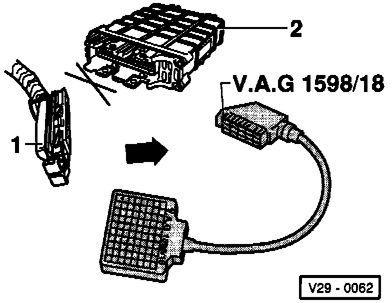
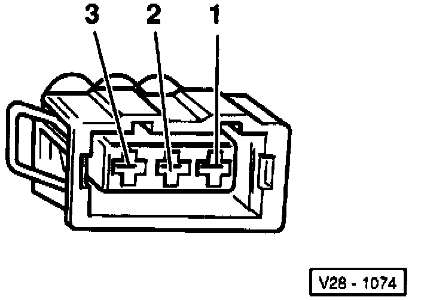

Camshaft Position Sensor: Testing and Inspection
Special tools, testers and auxiliary items:- VAG 1598118 test box.
- Multimeter (Fluke 83 or equivalent).
- Connector test kit VW 1594.
- Wiring diagram.
Test sequence:

- Disconnect 3-pin connector from camshaft position sensor.
- Connect multimeter using test leads from VW 1594 to measure voltage at terminals 1 and 3.
- Switch ignition on.
- Measure voltage between terminals 1 and 3.
Specification: 9-14.5 volts.
- Switch ignition off.
If the specification is not attained:

- Connect VAG 1598/18 test box to Engine Control Module (ECM) wiring harness (arrow).

- Check wiring between test box and 3-pin connector for open circuit according to wiring diagram.
- Terminal 2 and test box socket 44.
- Terminal 3 and test box socket 56.
Resistance: max. 1.5 ohms.
- Check wiring between 3-pin connector and relay panel for open circuit according to wiring diagram.
Terminal 1 and relay panel.
Resistance: max. 1.5 ohms.
- Additionally, check wires for short to one another.
- Terminal 3 and test box socket 44.
- Terminal 2 and test box socket 56.
Specification: infinite ohms.
If no wiring malfunction is detected and voltage was present between terminals 1 and 3:
- Replace distributor with Camshaft Position (CMP) sensor -G40- .
If no wiring malfunction is detected and no voltage was present between terminals 1 and 3:
- Replace ECM -J220-.
- Read the readiness code. If DTC memory has been erased, verify repair via appropriate display group See Readiness code, creating. Testing and Inspection